| |
|
KIRMIZI KOT TASARIMI
|
Bu bölüm aşağıdaki kısımlara ayrılmıştır: Tek veya Çift Kırmızı Kot (karayolları/otoyollar, tek hat/çift hat)
Güzergah Elemanları Gezgini Kırmızı Kot Tipi Kırmızı Kot Kesimlerinin Tanımlanması Düşey Kurpların Tanımlanması Kavşaklar için Kırmızı Kotların Otomatik Ayarlanması Kırmızı Kot Alternatifleri Dinamik veya Gerçek Zamanlı Değişiklik
Kırmızı Kota İlişkin Verilerin Kaldırılması Hesaplama, Geometrik Çözüm ve Listeler Ekranın sağ tarafındaki Sabit Menü Bilgi Ekranı
Seçenekler Arazi Yükle ve Kaldır Araçlar Diğer Boykesitler Diğer Eksenler Geçiş Noktaları Diğer Çizgiler Tasarım Dosyalar Yatay Güzergah Genel Bilgiler KIRMIZI KOT tasarım menüsü, düşey güzergahı, kırmızı kotlar ve parabolik veya dairesel düşey kurplar aracılığıyla tanımlamayı sağlar. Çalışma ortamı, tasarım elemanlarını ayırt etmek için uygun olan, varsayılan olarak 10'luk bir D/Y ölçek oranıyla ve gerçek büyüklükte XZ düzleminde bir tasarım görünümü gösterir: 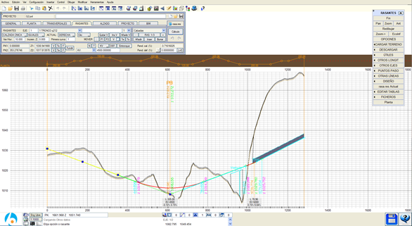
Ortam, YATAY GÜZERGAH ve BOYKESİT alanlarına çok benzer: Bir ana iletişim kutusu ve bir sabit yan menü. Koordinat sistemi X, Y'den KM ve kota değişir, bu da veri girişlerinin grafiksel veya sayısal olarak sağlanmasına olanak tanır ve görüntüleyicide imlecin konumu KM ve kot olarak gösterilir. Ekran üzerinde yapılan ölçümler, ölçülen mesafeyi, bunun yatay ve düşey bileşenlerini, eğimi ve düşey açıyı bildirir. Kırmızı kotların tanımlandığı iletişim kutusu, karayolları, demiryolları, boru hatları ve liman yapıları gibi tüm proje türleri için benzerdir. Boru hatları durumunda, baca ve boruların geometrik tanımına izin verilir. Ayrıca, yatay güzergah elemanları diyagramı, dever diyagramı ve dönme ekseninin konumu da görüntülenir. Bunlar ve bilgi etiketlerinin boyutu (yüksekliği) gibi diğer seçenekler, sabit yan menüden erişilebilen [SEÇENEKLER] iletişim kutusu aracılığıyla yapılandırılır. Projenin diğer eksenlerinin, diğer boykesitlerin ve hatta çizgilerin ve sembollerin çiziminin görüntülenmesi, uygulama tarafından basit bir şekilde yönetilir ve tüm bu veriler tanım verileriyle birlikte saklanır. 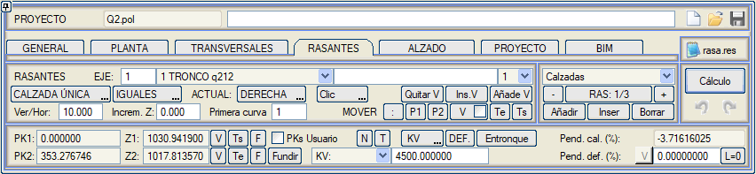
Arazi Boykesitinin Gösterimi 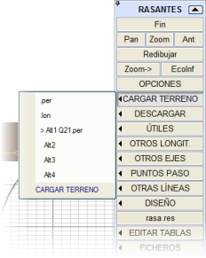Arazi boykesitinin görüntülenmesi, enkesit dosyasında mevcut olan eksendeki arazi kotu kullanılarak elde edilir. Bu dosyalar, her eksenin arazi enkesit dosyaları oluşturulduğunda ([ENKESİTLER] seçeneğinden) projenin her eksenine otomatik olarak 'bağlanır'. Bazen başka tür arazi verileri yüklenmek istenebileceğinden (belki de imalatın mevcut durumunu gösteren bir boykesit), program, [ARAZİ YÜKLE] düğmesi altında gruplanmış diğer dosyalardan bilgi yüklemeyi ve kaldırmayı sağlayan gerekli araçlarla donatılmıştır. .per'e tıklandığında, bir arazi enkesit dosyası yüklenir ve mevcut enkesit alternatifine atanır. Bu dosyadan, her enkesitin eksenindeki kot çıkarılır ve bu verilerle ekranda görünen arazi boykesiti oluşturulur. Bir enkesit dosyası yüklendiğinde, o dosyanın adı PROJE sekmesindeki tabloya eklenir ve projeyle ilişkilendirilir. Başka bir eksen için oluşturulmuş bir dosyanın verileri yüklenemez, bu nedenle böyle bir durumda program yeni eksene geçmek için onay ister, bu da veri kaybına neden olabilir. Her durumda, eğer PROJE tablosunda mevcut eksene zaten bir arazi enkesit dosyası atanmışsa, eksen değiştirildiğinde bu dosya otomatik olarak yüklenir. .lon'a tıklandığında, program doğrudan bir boykesit dosyasını .lon arazi profili olarak yüklemeyi sağlar. Eğer bir enkesit dosyasından sonra yüklenirse, verileri enkesitler arasına eklenerek detaylarını (yol kesişimleri, dereler,...) ekler, Optimal Boykesit Oluşturma bölümünde açıklandığı gibi. Alt1, Alt2, Alt3 ve Alt4 düğmeleri, her eksene atanabilecek olası arazi enkesit alternatiflerine atıfta bulunur, öyle ki kullanımda olan > simgesinin yanında görünür. Her alternatif, ilişkili enkesit dosyasının adını gösterir, bu şekilde bir arazi alternatifinden diğerine geçmek çok kolaydır. Eğer seçilen alternatifin ilişkili bir enkesit dosyası yoksa, o zaman arazi kaldırılır. İletişim Kutusunun Açıklaması 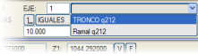Çalışılacak eksenin seçimi, EKSEN seçicisi kullanılarak yapılır. Eksen değişikliği, seçilen eksenin verilerinin otomatik olarak yüklenmesini gerektirir, ancak önce kullanıcıya mevcut eksenin verilerinin olası kaybı hakkında uyarıda bulunulur ve bunları kaydetme imkanı verilir. İki seçenek, bilginin nasıl görüleceğini ve sağlanacağını 'yapılandırmayı' sağlar:
Tek veya Çift Kırmızı Kot (karayolları/otoyollar, tek hat/çift hat) 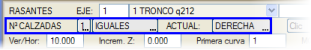PLATFORM SAYISI seçeneğinin kullanılması, güzergahın tek platformlu geleneksel bir karayolu mu yoksa bir orta refüjle ayrılmış iki platformlu bir otoyol mu olduğunu belirlemeyi sağlar. Demiryolları durumunda, tek hat mı yoksa çift hat mı olduğunu tanımlamaya da yarar. Seçeneğe basıldığında, veri [1] veya [2] değerleri arasında alternatif olarak atlar. [2] platform durumunda, tanımlanacak boykesit, ilgili ana platformların iç kenarına uygulanır. Bu durum, [AYNI/FARKLI] düğmesiyle değişebilir:
Veri girmek veya toplamak istenen tarafı seçmek için, MEVCUT platformu belirtmek üzere [SAĞ/SOL] düğmesine basmak yeterlidir. Tanımlanan kot, tek platform durumunda plan eksenindeki platforma ve otoyol durumunda her platformun iç şeridine uygulanır. Bu konum, enkesit tasarımında dönme eksenleri değiştirilerek kaydırılabilir. Güzergah elemanları gezgini 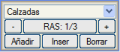Güzergah elemanları gezgini, tanımlanacak veya değiştirilecek kırmızı kot kesimini seçmenin yanı sıra veri silme ve ekleme imkanı sunar. Varsayılan olarak her zaman boş olsa bile bir veri bulunur. Ayrıca, bir kırmızı kot üzerine tıklayarak grafiksel olarak da seçim yapılabilir, bu durumda o kırmızı kot mevcut hale gelir. Mevcut kırmızı kot, onu diğer kırmızı kotlardan ayıran küçük bir daire ile veri noktalarında sarı renkte sunulur.
Kırmızı Kot Tipi 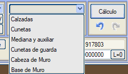ISTRAM®/ISPOL® , aynı eksene birkaç kırmızı kot ilişkilendirmeyi ve tanımlamayı sağlar. Elemanların tanımı hepsi için aynıdır: bir dizi kesim ve birleşim eğrisi. En normal durum, sağ için bir ve sol için başka bir olmak üzere iki farklı kırmızı kota sahip bir otoyoldur, ancak ayrıca hendeklerin ve kafa hendeklerinin (hem sağ hem de sol), orta refüjün ve çeşitli amaçlar için kullanılan bir yardımcı kırmızı kotun kırmızı kotunu tanımlamak da mümkündür. Güzergah elemanları gezgininde, resimde görülebileceği gibi her bir elemana erişim sağlayan bir düğme bulunur. Orta refüj, hendek ve kafa hendeği için kırmızı kotların özel durumu, hendek tabanı (veya orta refüj) kotunun, platform kenarlarından veya şevden geometrik tanımla elde edilenden bağımsız bir tanıma sahip olduğu projelerde uygulanır. Bu durumlar için, her bir elemanın tanım iletişim kutusunda [Boykesite Göre] modu etkinleştirilir ve o zaman orta refüj, hendekler ve kafa hendeklerinin tabanları burada tanımlanan her bir kırmızı kotun kotuyla hesaplanır.
Ayrıca, duvar kretinin ve duvar tabanının bir boykesitini tanımlama imkanı da vardır. Tanımlanan kırmızı kotların kotunun elde edilmesi için her birinin ilgili menüsünde [Boykesite Göre] seçeneğini etkinleştirmeliyiz. Kırmızı Kot Kesimlerinin Tanımlanması ISTRAM®/ISPOL®'de kırmızı kot tasarımı, iki nokta veya nokta ve eğimle tanımlanan sabit eğimli kırmızı kotların tanımına dayanır. Bu kırmızı kotlar için, girilen parabolik birleşim eğrilerinin uygulanmasından kaynaklanan kesişimler ve giriş ile çıkış teğetlikleri hesaplanır. Sistem, birleşim eğrileri tanımlamayı zorunlu kılmaz (poligonal kırmızı kotlar kullanılmasına izin verilir), bunların kullanılıp kullanılmayacağı kullanıcının elindedir. Bu işlevsellik, çeşitli şekillerde elde edilen ayrık verileri kullanma imkanı sunar (örneğin, birleşimsiz her 5 m'de bir tanımlanmış bir kırmızı kot, bir hendeği tanımlamak için tamamen geçerli olabilir). İletişim kutusunda, noktalar KM ve Z koordinatlarının girilmesiyle tanımlanır. Her bir eleman veya kesim, alternatif yöntemlerden biriyle tanımlanabilir:
İki kesimin alışılmış parabolik birleşim eğrisi ile birleştirilmesi, ilgili kutucuğa birleşim eğrisinin değerini (KV) girerek sağlanır ve aktif kesim ile bir sonraki arasında uygulanır. Tanımlanan verilerle, kullanıcı verileri girerken kırmızı kotu hesaplayabilir ve bir inceleme ve doğrulamanın ardından, enkesit tanımından oluşan bir sonraki tasarım aşamasına geçilebilir. 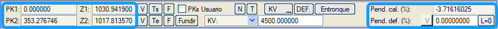
Düşey Kurpların Tanımlanması Düşey kurplar, tanımlanan kırmızı kotlar arasında parabolik veya dairesel geçişler yapmayı sağlar. Kullanıcı, eğrilik parametresini doğrudan değerini girerek tanımlayabilir veya programın diğer geometrik verilere dayanarak otomatik olarak hesaplamasına izin verebilir.
 Balast omzunun kotu, traversin ucunda kırmızı kota göreceli bir kota kadar yükselir/alçalır Balast omzunun kotu, traversin ucunda kırmızı kota göreceli bir kota kadar yükselir/alçalırZh = KırmızıKot - Ray_Yüksekliği - sth (sth, traversin balasttan ne kadar çıktığıdır). Ve H3, yüksek rayın tarafından bile kırmızı kot kotundan uygulanır. Çift Hatta iç bölge Zh ile korunur. 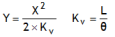Tüm veriler, ekli formüllere göre hesaplanır (birincisi düşey eksenli parabolü ve ikincisi L, Kv ve eğimlerin cebirsel farkı arasındaki ilişkiyi tanımlar). 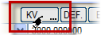Önceden, bildirilecek birleşim eğrisi türünün parabolik olduğu varsayılır. Ancak, [KV / Yarıçap] düğmesi, düşey birleşim eğrilerini tanımlamak için iki olası yöntem arasında geçiş yapmayı sağlar: Kv'si (somedeki yarıçap) ile tanımlanan düşey eksenli paraboller kullanmak veya yarıçapları ile tanımlanan dairesel birleşim eğrileri kullanmak. 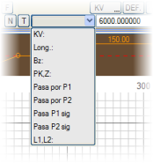Birleşim eğrisi ayrıca, Kv parametresiyle, uzunluğuna, açıortay veya sehim konumuna ve KM ile kot olarak bir geçiş noktasına göre de tanımlanabilir. Bunun için, program resimde gösterilen seçenekler açılır kutusunu sunar. Olasılıklardan her birine tıklandığında, yeni tiple ilişkili değerin birleşimi değiştirmemesi için ilgili hesaplamalar yapılır, böylece kullanıcı değişiklik yapmaya başlamadan önce başlangıç değerini not alabilir.
Program, her zaman girilen değere karşılık gelen modu saklar, böylece her birleşim için tanım için kullanılan veriyi (ve ilgili Kv'yi değil) her zaman görüntülemek mümkündür. 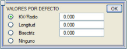[TNM.] tuşuna basıldığında, birleşimin parametre, uzunluk veya açıortayla tanımlanıp tanımlanmayacağını ve ilgili değerleri belirlemeyi sağlayan bir iletişim kutusu açılır. Bu, elemanlar eklendikçe program tarafından eklenen 'ortalama' değerlerin hızlı bir şekilde girilmesini sağlar. Yeni bir kırmızı kot eklenirse, birleşimi varsayılan değerlerle oluşturulur. Sona bir kırmızı kot eklenirse, varsayılan değerler önceki kırmızı kota sadece değeri hala sıfırsa uygulanır. Hiçbiri seçildiğinde, yeni bir kırmızı kot eklendiğinde önceki kırmızı kotla olan birleşimin değeri değiştirilmez. Bu araç, başlangıç hedefinin 'yumuşak' bir güzergah elde etmeyi sağlayan hızlı bir güzergah geliştirmek olduğu bilgi amaçlı projeler gibi başlangıç çalışmalarında uygun olabilir. Başka bir faydası, 'minimum' birleşim eğrileri sağlamak ve böylece uygun parametrelerin girilmesini bir an için tehlikeye atabilecek unsurları anında gözlemleyebilmektir. [T]'ye basıldığında, bazı 'tipik' değerleri seçme imkanı sunan bir menü açılır ve aşağıda açıklanan belirli geometrik koşulların karşılanması için gerekli Kv'yi hesaplayan birkaç mod sunulur:
Kavşaklar için Kırmızı Kotların Otomatik Ayarlanması  Bir ana yol ve bir rampa gibi eksenler arasındaki kavşakların tanımı, kot ve deverde gerekli bağlantıyı içerir. [Kavşak] tuşuna basıldığında, sonucu aktif eksene, ki bu açıkça rampa olmalıdır, kırmızı kot(lar)ın eklenmesi olan ve böylece rampa ile ana yol arasındaki ortak bölgede platformun geometrik sürekliliğini garanti eden bir dizi hesaplama yapılır. Bir ana yol ve bir rampa gibi eksenler arasındaki kavşakların tanımı, kot ve deverde gerekli bağlantıyı içerir. [Kavşak] tuşuna basıldığında, sonucu aktif eksene, ki bu açıkça rampa olmalıdır, kırmızı kot(lar)ın eklenmesi olan ve böylece rampa ile ana yol arasındaki ortak bölgede platformun geometrik sürekliliğini garanti eden bir dizi hesaplama yapılır.Başlangıç tanımı ile elde edilen kırmızı kotlar arasında sürekliliği sağlamak için, tanımlanan kırmızı kot ile eklenenler arasında çift parabol ile bir geçiş yapılır veya önerilen geçişin yarısından daha uzun bir parabol sığarsa tek bir parabol kullanılır. Gerekli veriler, BOYKESİT menüsünde bulunan [KAVŞAKLAR] iletişim kutusundan rampa içinde tanımlanır. Kırmızı Kot Alternatifleri 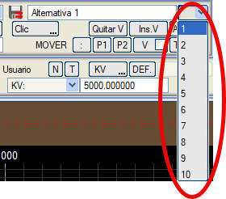İletişim kutusunda, aynı eksen için on adede kadar farklı kırmızı kot alternatifi bildirilebilir. Buna karşılık, her alternatif, platformların, hendeklerin, kafa hendeklerinin, orta refüjün ve yardımcının kırmızı kotlarını içerir. Her alternatif ayrıca bir ad, platform sayısı ve KV/Yarıçap birleşim eğrileri modunu içerir. Görüntüleme seçeneklerinde, farklı kırmızı kot alternatiflerinin ekranda gösterilmesi belirtilebilir. Alternatifler, .ras dosyasında ayrı ayrı yüklenebilir/kaydedilebilir. .vol dosyasında, mevcut tüm alternatifler ve ayrıca hesaplama için hangisinin mevcut olduğu değeri de kaydedilir/yüklenir. Dinamik veya gerçek zamanlı değişiklik 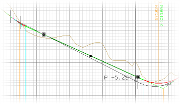Yatay güzergah tasarımında olduğu gibi, kırmızı kotu interaktif olarak, fareyi kullanarak ve kırmızı kotun 'veri' noktalarını (tutamakları) hareket ettirerek değiştirme imkanı vardır, böylece tasarımın nasıl değiştiği ekranda gözlemlenebilir. Bu gerçek zamanlı değişiklikler ve daha fazlası, ilgili düğmeler aracılığıyla da yapılabilir. Kullanımı şöyledir: Bir tıklama, değiştirilecek veriyi grafiksel olarak 'almayı' sağlar ve imleçle kaydırıldıktan sonra, yeni bir tıklama ekranda gerçek zamanlı olarak gösterilen değişikliklerin kabul edildiği anlamına gelir. 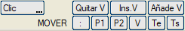Bu düğmelerden birine basıldıktan sonra, işlevi, grafik penceresinin dışında herhangi bir yere, örneğin [Hesapla] düğmesine veya Kv parametresinin değerine tıklanana kadar aktif kalır. Hem tutamakları doğrudan manipüle ederek hem de bu düğmeleri kullanarak, <Esc> tuşu değişiklik işlemini anında iptal eder. Mevcut kırmızı kotun bir sonrakiyle olan birleşiminin somesinde ve (KM1, Z1), (KM2, Z2) koordinatlarında tutamaklar oluşturulur.
İnteraktif değişiklik, ayrıca resimde görüldüğü gibi proje enkesitini de gözlemlemeyi sağlar. Başlangıçta tıklanan noktaya en yakın enkesitin KM'sindeki gerçek enkesit gösterilir (seçilen KM'nin tanımlanmış hesap bölgelerinden birinin içinde kalması gerekir, yani veriler ekstrapole edilmez). 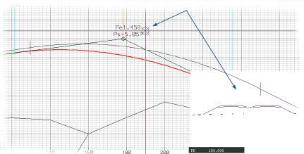
Kırmızı Kota İlişkin Verilerin Kaldırılması 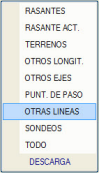 Yan menüdeki [KALDIR] seçeneğine basıldığında, yüklü (veya ekranda mevcut) olan farklı veri türlerine göre kaldırma seçenekleri sunan başka bir menü açılır.
Hesaplama, geometrik çözüm ve listeler [Hesaplama] düğmesine basıldığında, tüm hesaplamalar yapılır ve ulaşılan çözüm ekranda çizilir; her birleşime ilişkin alfanümerik bilgiler aşağıdaki verilerle gösterilir:
Hesapla komutunun altında, bu yapılan işlemleri geri almak (  ) veya yinelemek ( ) veya yinelemek ( ) için simgelerimiz vardır. ) için simgelerimiz vardır.Yığından bir durum geri yüklendiğinde, bu durumun yığının dışında kalmaması isteniyorsa Hesapla komutuna basılmalıdır. Çizim sistemi, yatay güzergah tasarımı için mevcut olanla benzerdir: hesaplama ile hesaplama arasında 'yeniden çizim' yapılmaz, böylece farklı alternatifler gözlemlenebilir ( 'yeniden çiz' tuşuyla veya fare tekerleğiyle yapılan dinamik yakınlaştırmalarla bir yenileme yapılana kadar). 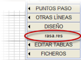Hesaplamaların bir sonucu olarak, dikey menüdeki [rasa.res] düğmesiyle doğrudan erişilebilen rasa.res listesi oluşturulur. Bu listede, girilen tanım verileri ve ISTRAM®/ISPOL® tarafından yapılan hesaplamadan elde edilenler bulunur; her birleşimin giriş ve çıkış teğet noktalarının konumu (KM), elde edilen eğimler ve mevcut kırmızı kotun yüksek ve alçak noktaları bildirilir: sağ platform, sol platform, sağ hendek, sol hendek, yardımcı, orta refüj, sağ kafa hendeği veya sol kafa hendeği. Listenin ikinci bölümü, her KM için (özel teğet noktalarıyla 20 m'lik bir aralıkla oluşturulmuş) kot, eğim ve eleman türü (rampa veya birleşim eğrisi) hakkında bilgi verir.
Bilgi Ekranı KM eşitliklerinden elde edilen kullanıcı KM'si diğer parametreler arasında gösterilir.  DD: Sapmalı Kırmızı Kot ve Deverler
DD: Sapmalı Kırmızı Kot ve DeverlerBu araca yan menüdeki [ARAÇLAR] üzerinden erişilir. Ana hattın kurpta, deverli ve boyuna eğimli olabileceğini dikkate alarak makasların neden olduğu sapmalı bir hattın kırmızı kotlarını ve deverlerini belirler. DD: Sapmalı Kırmızı Kot ve Deverler aşağıdaki parametrelere sahiptir:
 |
|||||||||||||||||||||||||||||||||||||||||||||||||||||||||||||||||||||||||||||||||||||||||||||||||||||||


 Kırmızı kotun uzunluğunu sıfırlamak için eğimini hesaplar, yani önceki birleşimin çıkış teğetinin mevcut birleşimin giriş teğetiyle çakışmasını sağlar. Alternatif olarak, kırmızı kot uzunluğunu sıfırlamak için eğimi koruyarak KM1, Z1'i kaydırabilir.
Kırmızı kotun uzunluğunu sıfırlamak için eğimini hesaplar, yani önceki birleşimin çıkış teğetinin mevcut birleşimin giriş teğetiyle çakışmasını sağlar. Alternatif olarak, kırmızı kot uzunluğunu sıfırlamak için eğimi koruyarak KM1, Z1'i kaydırabilir.